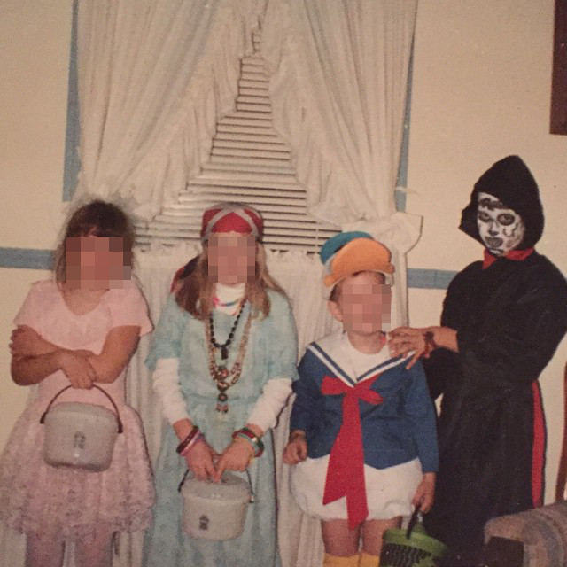

“Eye of newt, and toe of frog,
Wool of bat, and tongue of dog,
Adder’s fork, and blind-worm’s sting,
Lizard’s leg, and owlet’s wing,—
For a charm of powerful trouble,
Like a hell-broth boil and bubble.
Double, double toil and trouble;
Fire burn, and caldron bubble.”
― William Shakespeare
Let’s keep this one light.
It’s October 1st.
It’s that most glorious time of the year. When the strangling tendrils of summer’s humidity slink away and in their place the air takes on a crisp bite. When the smells shift to cider and pumpkin. And the leaves shift from greens to hues of orange and red. I can finally wear jeans and hoodies again. (Y’all, it’s fucking hot in the south. And it’s not a dry heat.)
But, most important of all this means it’s time for the mosquitoes to hibernate, or better yet, DIE!
Ok, seriously, most importantly it means it’s finally HALLOWEEN season!!

What the hell even am I? Why do I have the stigmata?
Whatever normal is, I’ve never been that. Obviously. Just look at that picture up there of me a kid. The others? All smiling faces and radiant colors. Me? Some blasphemous scourge shrouded in black all ready to devour little souls—and lots of candy. Honestly, why do I have the stigmata? I need to talk to my mother about this.
If it’s not clear by the provided photographic childhood evidence, I’ve always been obsessed with the spooky and macabre. And I got it honest. My mom would hand down the latest Stephen King novels once she finished reading them. My grandfather would let me sit in on horror and gore movies I was way too young to see.
But a favorite story my mother tells to back this up is of a night she went out and left me with my grandparents. She came home, late, after midnight-ish, and she says the house was dark and quiet save for the TV glowing in the living room. When she walked in, she found me there, wide-eyed, glued to a black-and-white vampire movie while my grandfather snored beside me.
That obsession continues.
I can’t think of a time in my childhood or adolescence that I wasn’t nose deep in a Stephen King (or, yes, Dean Koontz) novel or shoveling popcorn into my mouth while watching the latest—and often, least greatest—horror film. In adulthood, the search for all things horror is at a constant fever pitch. When it comes to horror in film and literature I consider myself a connoisseur. Though, scary fucking weirdo may also be accurate.
For this Halloween season, our first under pandemic conditions, no haunted houses or mazes, or double features at the cinema, I decided to craft us up an at home sixty-one day horror movie marathon. If you’re interested, you can check out the list of films over on my Letterboxd account, and while you’d be 30 days late to this party, feel free to join in and follow along.
Most of these films I’ve seen before, but I’ve made certain to add some newer and/or unseen classic films to the list. The beautiful thing about this marathon is that my significant other also loves Halloween and “spoopy” things, but she’s not seen even a fraction of the horror canon I have. And one of my favorite things is sharing something I love with someone I love.
I’ve tried to maintain a thread through the films, linking them together in ways that make sense, even if not immediately obvious. One glaring exception is that our first film, An American Werewolf in London is a film we watched out of a bit of “necessity,” meaning it kept popping up in some documentaries we were watching and she continued to comment on it. So, it simply had to be our fist film. From there, we get some of the classic goodies, some zombies, more werewolves, eldrich monsters, aliens, creatures, and witches…and so on.
The first film on the list that will be completely new to me, is quite new to all of us, and that’s Antebellum. I’ve not seen it yet, and while I’ve also not read the book Kindred by Octavia Butler, I’m dumfounded that her name is not listed in the credits. How is this film not based on that book? I guess I’ll have to see the film and read the book and make that assessment for myself.
We’re still trying to find other ways to make up for the lack of overall Halloween-ness this season. I’d love to find some fun socially-distanced things to do with friends and family. Meanwhile, our list of horror movies and decorations are doing well to keep us spirited this season.
But honestly, this is just kind of our normal aesthetic.
It’s always Halloween here.